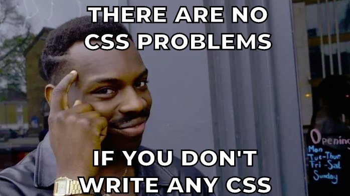

Maintainability
- Reusability
- Adaptability
- Readability
- Scalability
- Performance
Dariusz Krolikowski


.block {}
.block__element {}
.block__element--modifier {}<form class="form">
<input class="form__input form__input--disabled" />
</form>


Reusable and adaptable
.article-preview
.article-preview__image
.article-preview__content
.article-preview__title
.article-preview__body* Don’t Repeat Yourself
@extend or mixin
.article-preview { @extend .author-bio; }
.article-preview__image { @extend .author-bio__image; }
.article-preview__content { @extend .author-bio__content; }
.article-preview__title { @extend .author-bio__name; }
.article-preview__body { @extend .author-bio__body; }.media-card
.media-card__image
.media-card__content
.media-card__title
.media-card__bodyCSS semantics are for developers.
<div id="article">
<div class="headline">Animal sounds</div>
<div>The cow goes <div class="bold">moo</div>.</div>
</div>HTML semantics are for users.
<article>
<h1>Animal sounds</h1>
<p>The cow goes <strong>moo</strong>.</p>
</article>.bold { font-weight: bold; } /* presentational */
.author-name { font-weight: bold; } /* semantic */“[…] authors are encouraged to use values that describe the nature of the content, rather than values that describe the desired presentation of the content.”

“Separation of concerns”
HTML is restyleable!
CSS depends on HTML
“Mixing concerns”
CSS is reusable!
HTML depends on CSS
Neither approach is “wrong”.
“For individuals weaned on an ideology where ‘Semantic HTML’ means using content-derived class names, it usually requires you to work on a large application before you become aware of the impractical nature of that approach.”
“… is the approach to CSS architecture that favors small, single-purpose classes with names based on visual function.”
Also known as
.position-relative { position: relative }
.display-block { display: block }
.border { border: 1px solid #ccc }
.text-center { text-align: center}
.font-weight-bold { font-weight: bold }
.red { color: red }.font-16 { font-size: 16px }
.font-20 { font-size: 20px }
.font-28 { font-size: 28px }.margin-1 { margin: 0.5rem }
.margin-2 { margin: 1rem }
.margin-3 { margin: 2rem }
.margin-x-2 { margin-left: 1rem; margin-right: 1rem; }

Favors composition over inheritance


The older your codebase is
the less CSS you will write

There are 2 hard problems in computer science: cache invalidation, naming things, and off-by-1 errors.
Naming utility classes is straightforward.
Longhand: favors readability
.font-large { font-size: 3rem }
.margin-top-0 { margin-top: 0 }Shorthand: favors brevity
.f1 { font-size: 3rem }
.mt-0 { margin-top: 0 }<div class="profile-wrapper">
<div class="profile-wrapper__name">Alex</div>
</div>
<div class="flex">
<div class="flex-1">Alex</div>
</div>“My biggest argument is not having to name every thing. You know how many times I’ve had to think of a name for a random container that exists simply to align some crap?”

<h2 style="font-size: 16px; font-weight: bold; color: purple">
Breaking Bad
</h2><h2 class="font-16 font-bold font-purple">
Breaking Bad
</h2><div class="flex flex-column flex-md-row">
<div>Element 1</div>
<div>Element 2</div>
</div>.btn, .modal)<button class="bg-blue-500 hover:bg-blue-700 text-white
font-bold py-2 px-4 rounded">
<%= label %>
<% if (icon) { %>
<%= icon %>
<% } %>
</button><button class="btn-blue">Button</button>
<style>
.btn-blue {
@apply bg-blue-500 text-white font-bold py-2 px-4 rounded;
}
</style>
<div class="mt-4 md:mt-0 md:ml-6 w-64">
<h3 class="uppercase tracking-wide text-sm text-indigo-600">
Marketing
</h3>
<a href="/pricing.html"
class="block mt-1 text-lg leading-tight font-semibold
text-gray-900 hover:underline">Pricing</a>
<p class="mt-2 text-gray-600">
Get the best offer for your business
</p>
</div>.margin-20 → .margin-3.font-16 → .font-3 / .font-medium.color-blue → .color-primaryUse abstract over absolute units
header#admin-main-header.header--bar-right-part li > a {
line-height: 35px;
}
.line-height-2 { line-height: 35px; }CSS styles

CSS classes


If you love the way you write CSS and don’t want to change… then don’t.
… but
“You have to be prepared to disgard old ideas, look at alternatives, and even revisit ways that you may have previously dismissed.”
github.com / darekkay / presentations
Dariusz Krolikowski
@darek_kay darekkay.com